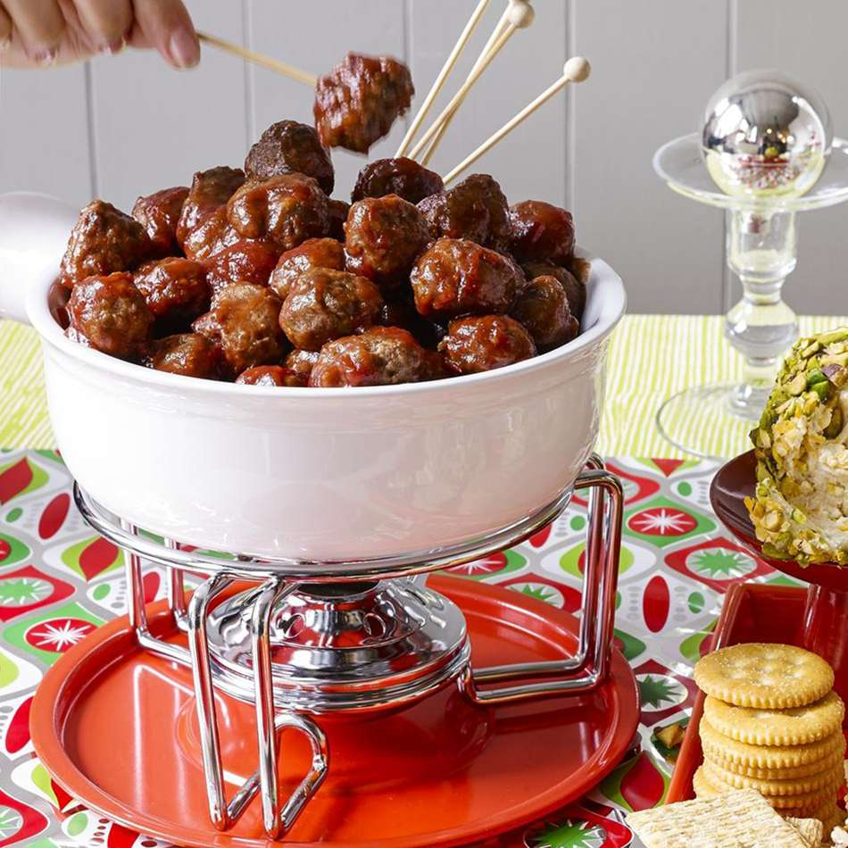

Cocktail Meatballs

Description
Welcome to some Cocktail Meatballs. Deliciously served with a side of spaghetti for an everlasting taste that will leave you speechless
Ingredients
- 1 pound lean ground beef
- 3 tablespoons minced onion
- 2 tablespoons water
- etc
Instructions
- Gather the ingredients. Preheat the oven to 350 degrees F (175 degrees C).
- Mix ground beef, bread crumbs, onion, water, and egg together in a large bowl. Form into small meatballs and arrange on a nonstick baking sheet. Bake in the preheated oven for 20 to 25 minutes, turning once.
- Stir cranberry sauce, chili sauce, brown sugar, and lemon juice together in a large saucepan over low heat until smooth. Add meatballs; simmer for 1 hour before serving.